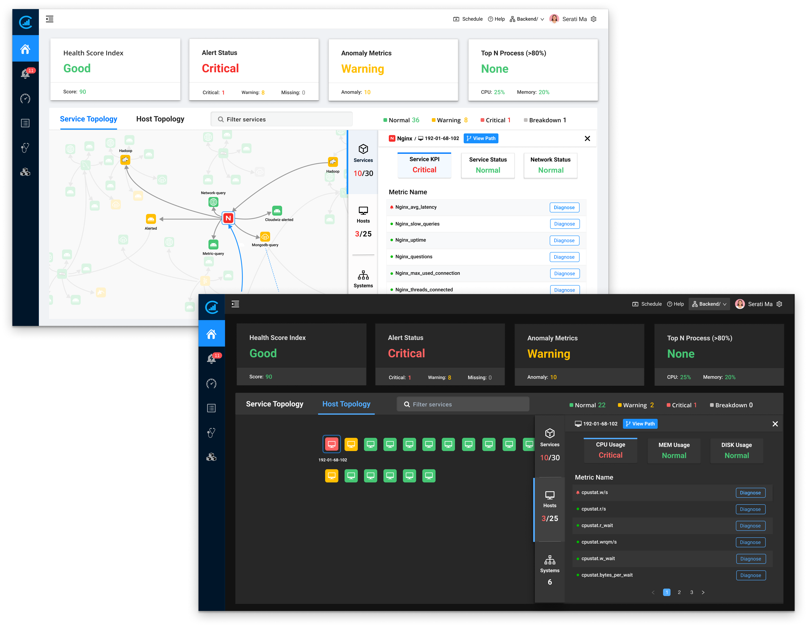

Cloudwiz Dashboard 2.0
Project Overview
In 2016, I joined Cloudwiz, a B2B startup that built an Application Performance Management Platform (APM) powered by AI technology. When our product offerings scaled up, the original monitoring dashboard UI didn't adapt to reflect the trending full-stuck observability for APM. I led and drove a dashboard redesign to transform data into insight. As a result, the new dashboard not only provided context across the full stuck system to drive action, it also enabled causation-based AI to make measurable impact and solution recommendations.
My Role
As the sole designer in the team, I drove an iterative end-to-end user experience design to transfer the complex concepts to clear and succinct design deliverables and partnered with PMs and engineers to bring the design crafts to life.
Time Period
10 Months
Challenge
Evolve dashboard to provide a real-time full-stack monitoring
When we originally released Cloudwiz APM platform in late December 2016, our dashboard UI was designed to make it easy for our users to view and examine key performance metrics, and predictive data graphs for virtual machine configuration. It was a Version 1.0 design, so to speak. It accomplished its task yet not without some pitfalls.
As the rise of IT complexity posed a significant challenge to IT operation, full-stack observability became a common need across industries, which allowed IT teams to monitor an entire IT stack, including everything from customer-facing applications to core network and infrastructure.
To follow the new trend and enhance engagement of the dashboard home page, our team kicked off the dashboard redesign project to solve the problem.
Balancing the complexity of data consumption in a time-mannered environment became a big challenge to dashboard redesign.
Strategy
Focus on key metrics and connect the dots
As a single point of access to all captured data, the dashboard tells users the system's performance status and drives insightful actions. Instead of providing the graphs-generated data metrics on the dashboard landing page, we choose the most important metrics that matter to the system's health and put more focus on creating a real-time and connected visibility across the full stack.
The assumption was based on the rise of full-stack observability driven by digital transformation. The early architectural decision on the dashboard directly demonstrated our product's value proposition and had a major impact on the quality of the performance troubleshooting experience we created.

Solution
Introduce Cloudwiz dashboard 2.0
The new dashboard comprised two components: high-level key metrics that reflected system's health and a real-time dependencies topology mapping that visualized data that's already being collected by Cloudwiz


The assumption was based on the rise of full-stack observability driven by digital transformation. The early architectural decision on the dashboard directly demonstrated our product's value proposition and had a major impact on the quality of the performance troubleshooting experience we created.

The Journey to Connect the Dots
Based on the initial insights from our research, two main reasons led to the customers’ problem.
- Usability issues on current UI;
- The current dashboard home page didn’t provide the big picture of the relationship among metrics on the board. It led customers to spend extra time switching between different metrics and figure out the relationships.

How to provide customers a real-time full picture of the infrastructure stacks became a challenge for me at the initial design stage. Initially, I put more focus on figuring out what important metrics mattered to customers. After analyzing users' patterns and workflows of monitoring the system performance, I found that users spent quite a lot of time figuring out the root cause of the issues. At the same time, most users didn't realize the current topology mapping feature can achieve their goal. It allowed me to hypothesize whether promoting the topology mapping feature could enhance the users’ awareness of the relationships of the IT stack.
Performance Metrics-Led VS Topology Map-Led
I wireframed solutions into two directions and involved all relevant team members to review them. I found that I had immersed myself in a pool of different viewpoints and spent a large amount of time debating design decisions. To move the design-forward, I worked extra time to create a shared design vision for decision making.

By leveraging the mutual visions in our discussions, the team decided to keep some key metrics on the home page and build a service topology map-based dashboard.
Design Iteration
By applying the "ship to learn" strategy, I iterated design, beta tested it and optimized it based on qualitative and quantitative research results. In order to align my design solution with our product goal and business outcomes, I set three main metrics to improve customer engagement with the dashboard homepage.
First Version
This design solution contained two parts: tile-based performance metrics and a full view service topology map with the accordion UI pattern. I used a progressive disclosure strategy to allow customers to dive into details based on their needs. Another reason that I applied the expandable view pattern was to keep UI consistent when customers dig into details in other features.
Second version
Based on test results, I specifically iterated the topology map by using a “row to details” strategy. It divided the list view and the details panel clearly and allowed customers to focus on the metrics of each service node. This UI pattern has become a trend among many B2B products.
Third Version
In order to improve user experience when they interact with topology map, I put service and host detail page on the right side, so users don't need to scroll up and down to dive in details.The new topology map demonstrated the service and host inner dependency relationship, which proide users a holistic view aboutsystem status.
Final version
Based on test results, I specifically iterated the topology map by using a “row to details” strategy. It divided the list view and the details panel clearly and allowed customers to focus on the metrics of each service node. This UI pattern has become a trend among many B2B products.

Results and Impact
As we applied "Ship to Learn"strategy and scrum development framework, I closely work with Engineering team to test our each beta version. As for user experience aspect, I not only monitored metrics of user experience performance on our platform, but also conducted usability testing with our clients and created follow-up surveys after the official version launched.
As a result, the redesign dashboard project not only highly increased the usage rate of the topology map feature but more importantly, it also improved customers’ efficiency in identifying the root cause of the problem. Based on our customer survey findings, 90% of current customers adopted the new dashboard UI design and the new dashboard landing page helped customers save 50% less time on pinpointing issues based on our follow-up surveys.